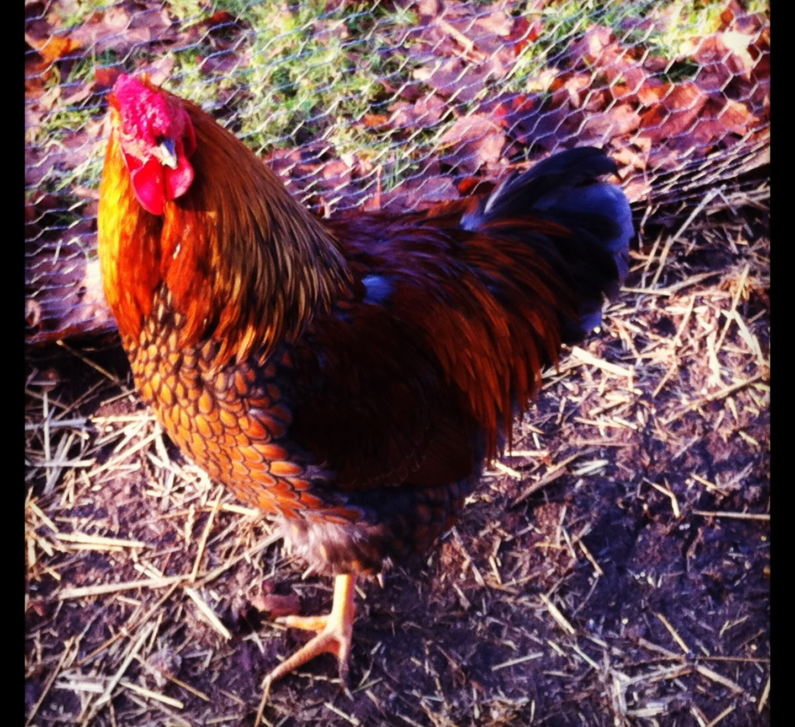

Captain Sassy Pants.
0000-0000

Captain Sassy Pants was a surprise in a batch of laying hens. He lived and loved strong and proud. Taken too soon but before the neighbours could complain about his penchant for early morning calls. He had a flair for the dramatic.
